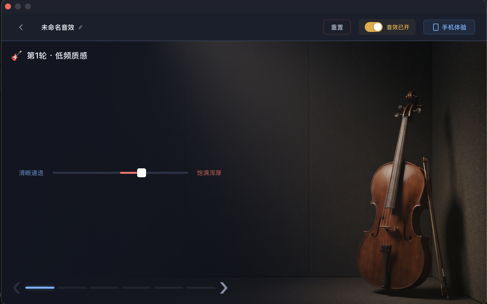
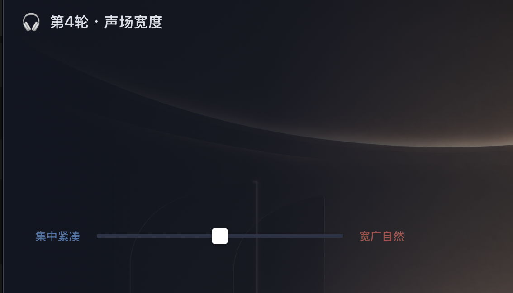

Natural-Language Audio Tuning
Turning everyday language into executable audio-effect adjustments, with iterative editing and before-and-after listening.
Research & engineering prototype · Internal demonstrations and staged validation

From language to audio effects
The prototype lets listeners describe a desired change in everyday language while also supporting explicit parameter requests. A large language model combines the text request with the current effect-chain state to generate structured operations.
A parameter-conversion layer connects those operations to an audio-processing library. The interface returns the applied settings and processed audio, making the result available for inspection and listening.
Continuous tuning
Follow-up requests build on the current effect chain rather than starting from scratch. Execution results are carried into subsequent turns, so users can refine the same setup through conversation.
Manual parameter controls and comparisons with the original audio complement the dialogue, letting users explore changes in tone and ambience through listening.
Early interaction exploration
An earlier guided interface explored perceptual controls for bass character and soundstage width alongside free-form conversation.


Consistent parameter units
Programmatic conversion maps the units used by the language model to the processors' internal values. Applied settings are converted back into the same units for inspection and subsequent edits.
This keeps requested changes, execution, and feedback connected to the actual effect-chain state.
Evaluation and validation
The project explored retrieval-based and language-model approaches, with internal demonstrations and small-scale prototype trials. Evaluation separates language understanding, parameter generation, and execution behavior.
Robustness checks, interface regression tests, and listening comparisons examine what the system understood, what it actually changed, and how the audio was affected.